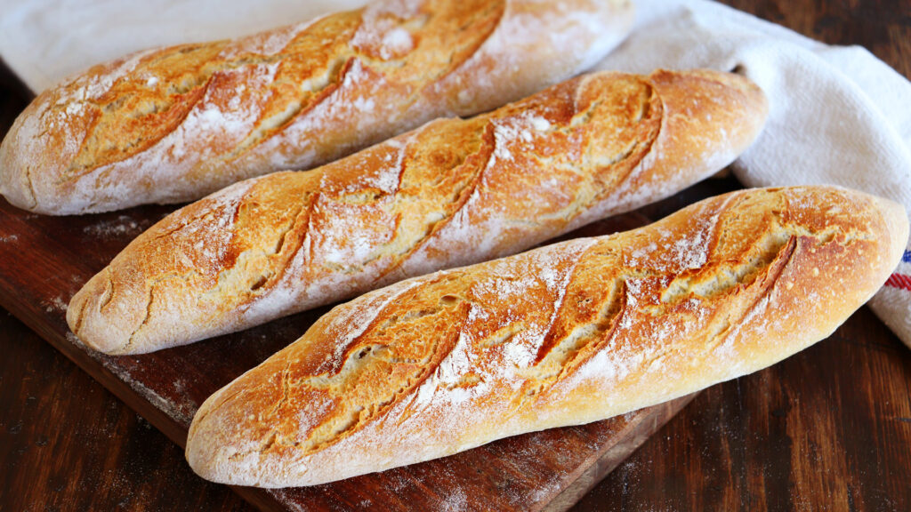

Baguetes
with poolish
<
THE SIMPLEST BREADS ARE THE MOST DIFICULT TO PRODUCE, and the baguette is high on the list of "simple" breads: simple, in that it is made with a minimun of ingredients; there are no strong flavors that dominate, and it is above all the flavor of the flour that prevails. Properly made, it is magnificent; poorly made, it is bland and insipid. One of the more beautiful aspects of the baguette is the amount of crust it has. A finished baguette should have a rich, russet crust, crackling and fragant-don't underestimate the virtue of a bold bake. At the same time, the crumb should be creamy and aromatic, with a cell structure charaterized by lots of random-sized holes, with translucent cell walls (if the holes are big ecnought to hide a mouse, though your shaping skills nedd some atention).
Production time can be reduced by 30 to 60 minutes, but the most superior results are obtained with a full 2-hour bulk fermentation. As with all breads, careful attention to detail throught production is the best method to achieve consistently tasty results. Round loaves (boules), oval loaves (batards) and rolls can be made with this dough. Round and oval loaves of 1 to 1.5 pounds, and rolls scaled at 2.5 to 3.25 ounces give nice results.
Overal formula
- 2 lb of bread flour
- 1 li, 5.2 oz of water
- .6 oz of salt
- .13 oz of instant dry yeast
Poolish
- 10.6 oz of bread flour
- 10.6 oz of water
- 1/8 tsp of instant dry yeast
Final Dough
- 1 lb 5.4 oz of bread flour
- 10.6 oz of water
- .6 oz of salt
- .13 oz of instant dry yeast
- 1 lb, 5.2 oz of poolish
Instructions
- POOLISH: disperse the yeast in the water, add the flour and mix until smooth. Cover the bowl with plastic and leyt stand for 12 to 16 hours at about 70 degrees Farenheit.
- MIXING: Add all the ingredients to the mixing bowl, including the poolish. In a spiral mixer, mix on first speed for 3 minutes in order to incorporate the ingredients. If necessary, correct the hydration by adding water or flour in small amounts. Finish mixing on secont speed for 3 to 3 and 1/2 minutes. The dough should be supple and moderately loose. Desired dough temperature is 76 degreees Farenheit.
- BULK FERMENTATION: 2 hours.
- FOLDING: Fold the dough once after 1 hour.
- DIVIDING AND SHAPING:Divide the dought into 12 to 16 once pieces. Preshape lightly into rounds and leave on a lightly floured work surface, seams up, covered with plastic. Once the dough has relaxed sufficiently (10 to 30 minutes, depending on how tightly it was preshaped), shape into a long, slender and graceful baguettes. Place them between folds of baker's linen, leaving enought space between each bathette so they can expand without tearing during final germentation. Cover the loaves with bake's linen and plastic to protect them from air currents and prevent the formation of a crust on the surface of the loaves.
- FINAL FERMENTATION: 1 to 1 1/2 hours at 76 degrees Farenheit.
- BAKING: With normal steam, 460 degrees Farenheit for 24 to 26 minutes for baguettes, depending on dough weight. Round and oval loaves: about 30 minutes for a 1 pound loaf, with round loaves taking slightly longer than oval ones.